Objetivo
Al terminar tendrás una escena con un suelo (StaticBody2D) y un personaje (RigidBody2D) que cae por la gravedad y se queda apoyado encima.
Partimos de: Un proyecto de Godot 4.6 recién creado, vacío (solo tiene icon.svg).
Nodos que usamos
StaticBody2DCuerpo físico que no se mueve. Los demás chocan contra él: suelos, paredes, plataformas.
RigidBody2DCuerpo físico que se mueve solo por la simulación: le afecta la gravedad, los choques y los impulsos.
CollisionShape2DLa forma con la que choca un cuerpo. Sin ella, el cuerpo no choca con nada.
Sprite2DLa imagen que se ve. Solo es dibujo: no choca.
Paso a paso
1Crea una escena 2D
En el panel Escena, pulsa Escena 2D. Se crea el nodo raíz de la escena, un Node2D, y el editor cambia a la vista 2D.
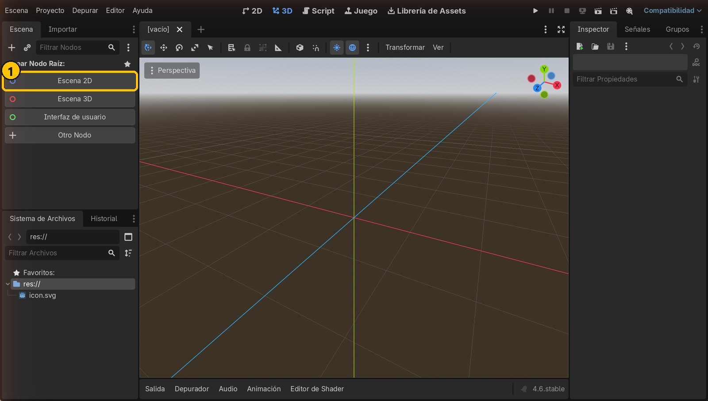
- 1Botón «Escena 2D»
2Guarda la escena
Pulsa Ctrl+S. Deja el nombre que propone, node_2d.tscn, y pulsa Guardar.
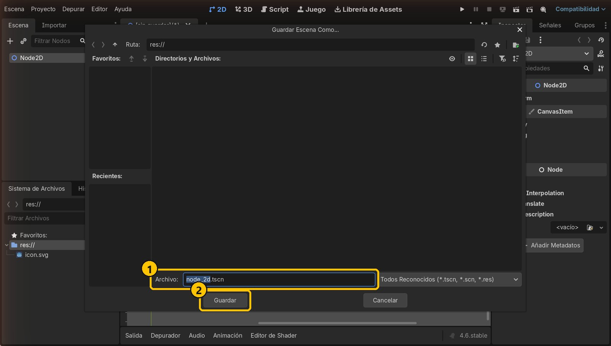
- 1Nombre del archivo de la escena
- 2Guardar
3Añade un StaticBody2D para el suelo
Con el Node2D seleccionado, pulsa el botón + del panel Escena (o Ctrl+A). Escribe StaticBody2D, elígelo y pulsa Crear. Después cámbiale el nombre a Suelo: selecciónalo y pulsa F2 (o haz doble clic en el nombre).
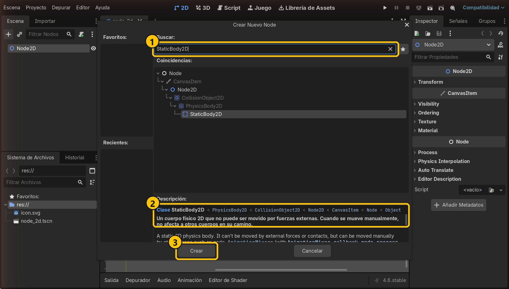
- 1Busca el tipo de nodo
- 2La descripción: no lo mueven fuerzas externas
- 3Crear
4Lee el aviso: falta la forma
Aparece un triángulo amarillo junto a Suelo. Si pasas el ratón por encima, Godot explica que el nodo no tiene forma y por tanto no puede chocar con nada. Lo arreglamos en el paso siguiente.
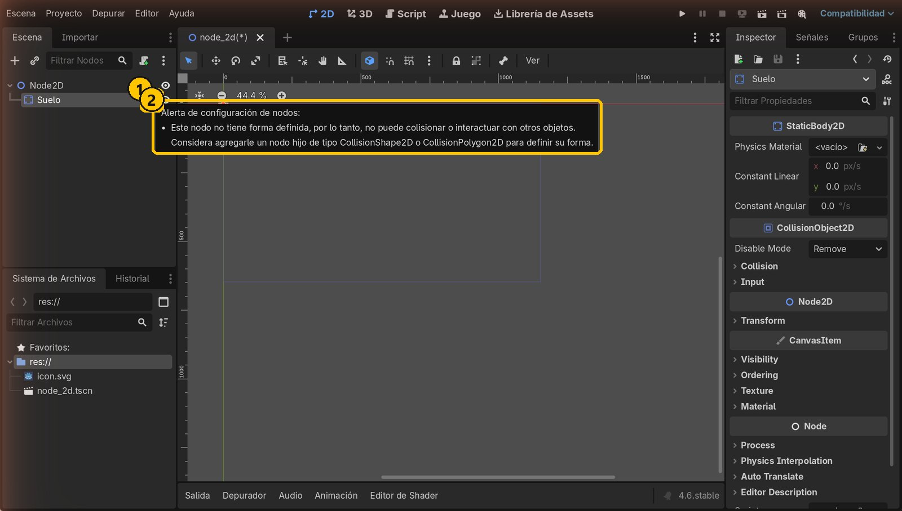
- 1Aviso de configuración
- 2Necesita un CollisionShape2D hijo
5Añade la forma de colisión
Con Suelo seleccionado, añade un hijo CollisionShape2D (botón +). En el Inspector, abre el desplegable de Shape y elige Nuevo RectangleShape2D.
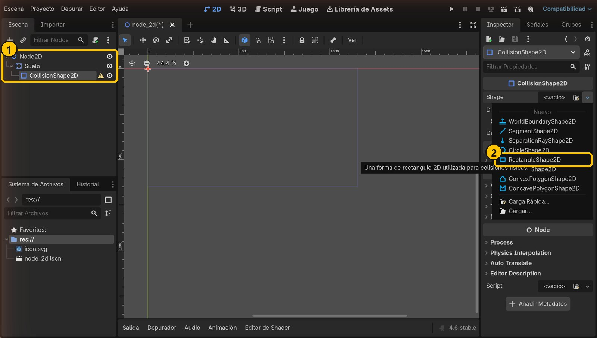
- 1CollisionShape2D, hijo de Suelo
- 2RectangleShape2D
6Dale tamaño a la forma
Pulsa sobre el recurso RectangleShape2D para desplegarlo y escribe en Size: x = 1000, y = 60. También puedes arrastrar los puntos rojos en el visor.
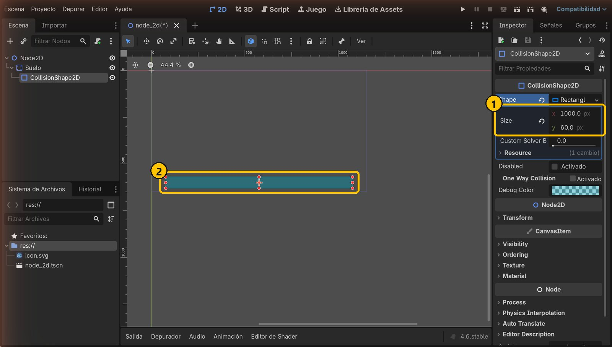
- 1Size: 1000 × 60 píxeles
- 2La forma en el visor
7Coloca el suelo abajo
Selecciona Suelo (el padre, no la forma). En el Inspector, despliega Transform y escribe en Position: x = 576, y = 600. Al mover el padre, todos sus hijos se mueven con él.
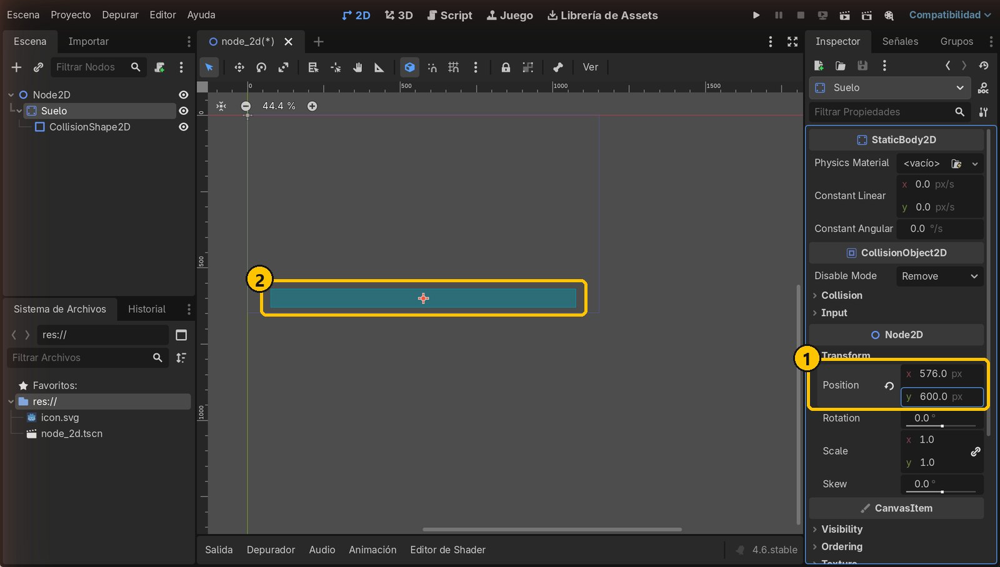
- 1Position: 576, 600
- 2El suelo, en la parte baja de la pantalla del juego
8Dale una imagen al suelo
La forma de colisión no se ve al jugar. Añade a Suelo un hijo Sprite2D y arrastra icon.svg desde el Sistema de Archivos hasta su propiedad Texture.
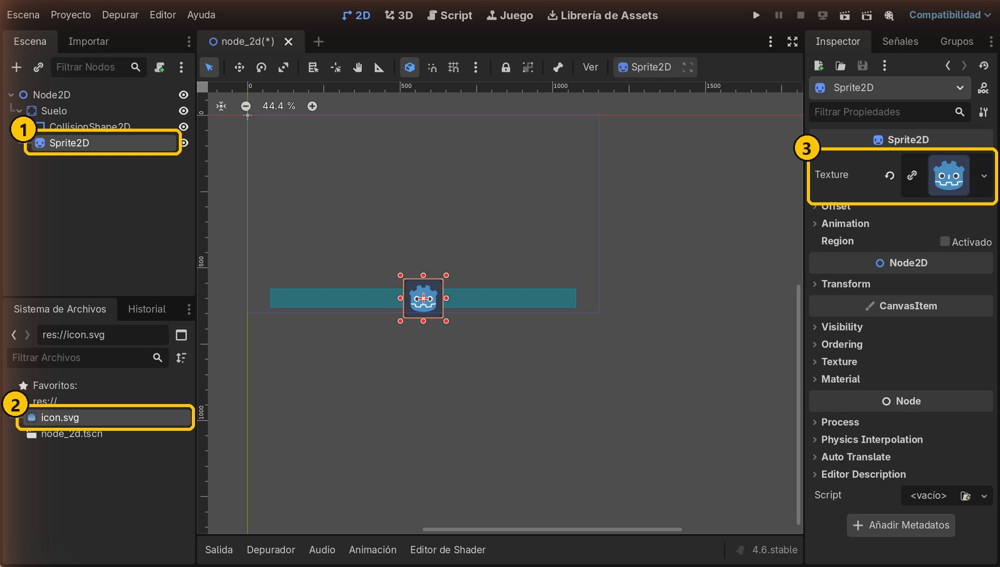
- 1Sprite2D, hijo de Suelo
- 2Arrastra icon.svg…
- 3…hasta Texture
9Estira la imagen
El icono mide 128 × 128 píxeles. En Transform → Scale, pulsa el icono de la cadena para poder cambiar x e y por separado y escribe x = 7.813 (1000 ÷ 128) e y = 0.469 (60 ÷ 128). Ahora imagen y forma coinciden.
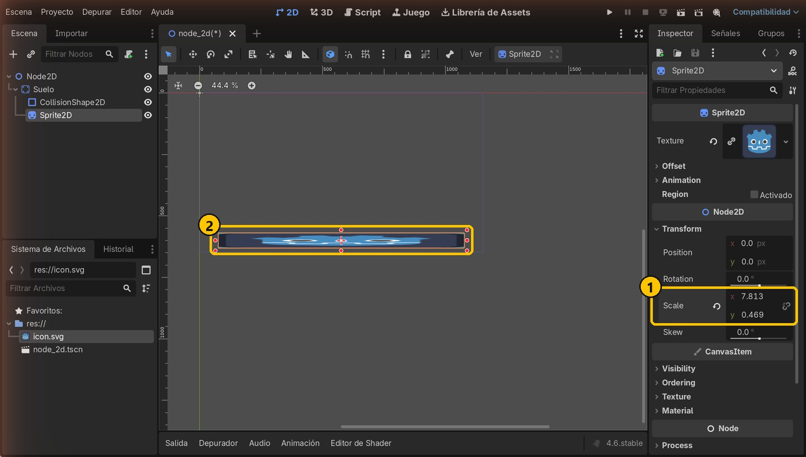
- 1Scale: 7.813 × 0.469
- 2Imagen del tamaño de la forma
10Crea el personaje con un RigidBody2D
Selecciona Node2D y añade un hijo RigidBody2D. Cámbiale el nombre a Personaje. Este cuerpo sí se mueve: lo controla la simulación física.
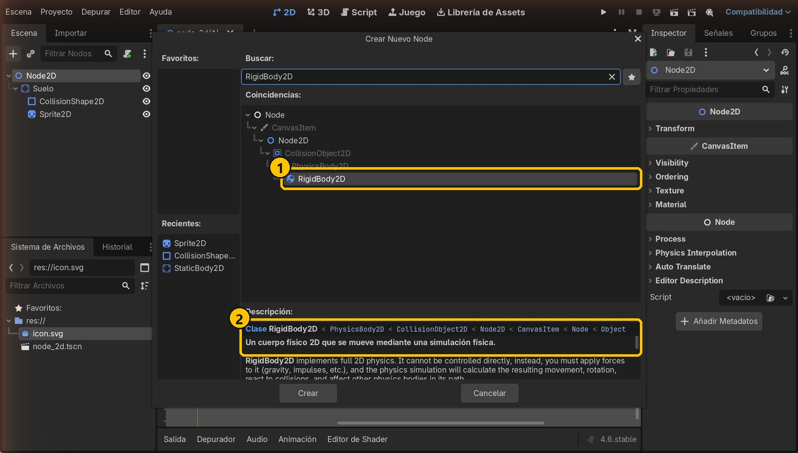
- 1RigidBody2D
- 2Se mueve mediante una simulación física
11Forma e imagen del personaje
Igual que el suelo, el personaje necesita su forma: añade a Personaje un CollisionShape2D con Nuevo CircleShape2D y ponle Radius 64. Después añade un Sprite2D con icon.svg en Texture.
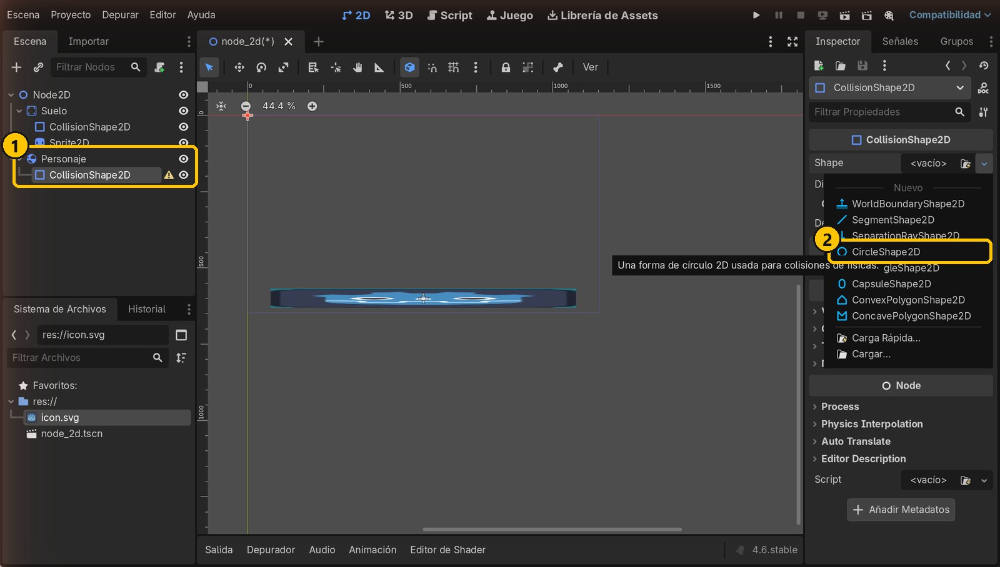
- 1Hijos de Personaje
- 2CircleShape2D
12Coloca el personaje arriba
Selecciona Personaje y pon en Position x = 576, y = 150. Arriba del Inspector están sus propiedades físicas: Mass (masa) y Gravity Scale (cuánto le afecta la gravedad).
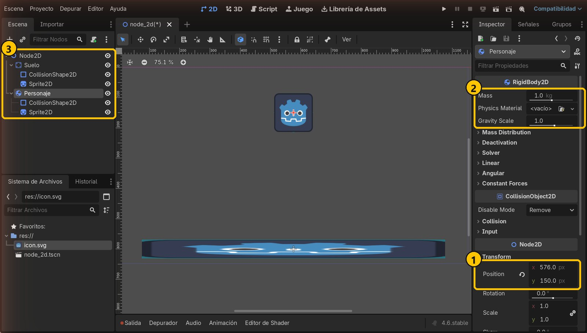
- 1Position: 576, 150
- 2Masa y escala de gravedad
- 3La escena completa
13Ejecuta el juego
Pulsa el botón Ejecutar proyecto (F5). La primera vez Godot pregunta cuál es la escena principal: pulsa Seleccionar actual.
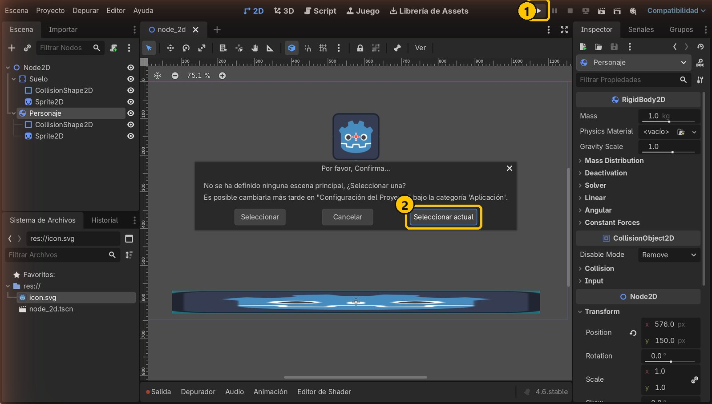
- 1Ejecutar proyecto (F5)
- 2Seleccionar actual
14¡Funciona!
El personaje cae por la gravedad y se queda apoyado sobre el suelo: el RigidBody2D choca con el StaticBody2D gracias a sus formas de colisión.
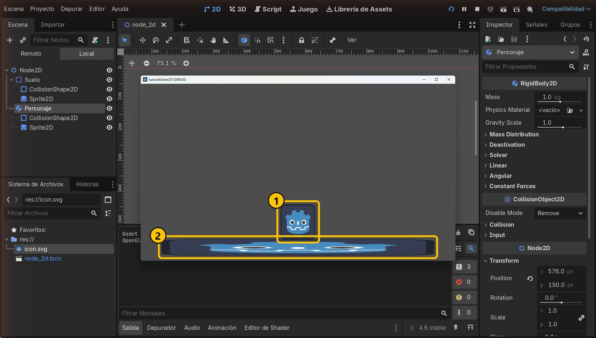
- 1Personaje (RigidBody2D)
- 2Suelo (StaticBody2D)
Resumen
- StaticBody2D: lo que no se mueve.
- RigidBody2D: lo que cae, choca y se empuja.
- Los dos necesitan siempre un CollisionShape2D con su forma.
Si algo falla
- El personaje atraviesa el suelo. Falta un
CollisionShape2Do su Shape está vacía (busca el triángulo amarillo). - La imagen y la forma no coinciden. Has movido un hijo en vez del padre. Mueve siempre el cuerpo (Suelo, Personaje) y deja los hijos en
0, 0. - Al ejecutar sale una pantalla gris. No hay escena principal o es otra. Revísalo en Proyecto → Configuración del Proyecto → Aplicación → Ejecutar → Escena principal.
Prueba tú
- Cambia Gravity Scale del personaje a
0.2y luego a-1. ¿Qué pasa? - Gira el suelo con Rotation (por ejemplo
10°) para que el personaje ruede. - Pon al personaje un Physics Material nuevo con Bounce
0.6para que rebote.